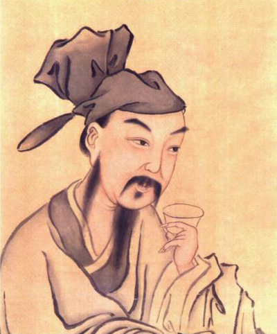
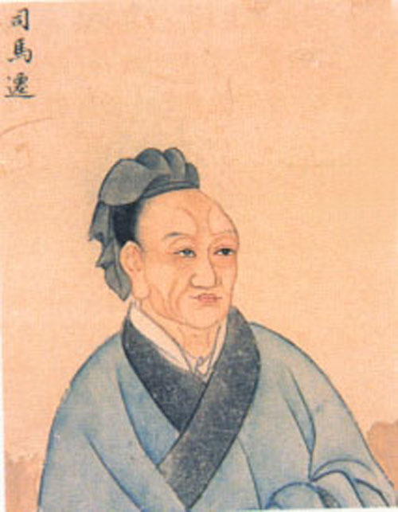
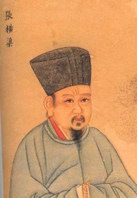

-
-  杜牧 高楼风雨感斯文，刻意伤春复伤别，短翼差池不及群。人间惟有杜司勋。
杜牧的文学创作有多方面的成就，诗、赋、古文都身趁名家。杜牧主张凡为文以意为主，以气为辅，以辞采章句为之兵卫，对作品内容与形式的关系有比较正确的理解。并能吸收前人的长处，以形成自己特殊的风貌。杜牧的诗歌以七言绝句著称，内容以咏史抒怀为主，其诗英发俊爽，多切经世之物，在晚唐成就颇高。人称"小杜"，以别于杜甫，"大杜"。与李商隐并称"小李杜"。
-
-
 苏武
今足下还归，扬名于匈奴，功显于汉室，虽古竹帛所载，丹青所画，何以过子卿！
苏武
今足下还归，扬名于匈奴，功显于汉室，虽古竹帛所载，丹青所画，何以过子卿！
苏武(前140年-前60年)，字子卿，汉族，杜陵(今陕西西安)人，代郡太守苏建之子。西汉大臣。武帝时为郎。天汉元年奉命以中郎将持节出使匈奴，被扣留。匈奴贵族多次威胁利诱，欲使其投降;后将他迁到北海边牧羊，扬言要公羊生子方可释放他回国。苏武历尽艰辛，留居匈奴十九年持节不屈。至始元六年，方获释回汉。苏武去世后，汉宣帝将其列为麒麟阁十一功臣之一，彰显其节操。
-
-
-  司马迁 武帝时文人，赋莫若司马相如，文莫若司马迁
司马迁，字子长，夏阳(今陕西韩城南)人。中国西汉伟大的史学家、文学家、思想家。司马谈之子，任太史令，因替李陵败降之事辩解而受宫刑，后任中书令。发奋继续完成所著史籍，被后世尊称为史迁、太史公、历史之父。他以其“究天人之际，通古今之变，成一家之言”的史识创作了中国第一部纪传体通史《史记》是“二十五史”之首，被鲁迅誉为“史家之绝唱，无韵之离骚”。
-
-  张载 学有本原，四方之学者皆宗之。
张载，字子厚，凤翔郿县(今陕西眉县横渠镇)人。北宋思想家、教育家、理学创始人之一。进士及第，拜祁州司法参军，授云岩县令，迁著作佐郎、崇文院校书郎。与周敦颐、邵雍、程颐、程颢合称"北宋五子"。其"为天地立心，为生民立命，为往圣继绝学，为万世开太平"的名言，被当代哲学家冯友兰称作"横渠四句"，因其言简意赅，历代传颂不衰。
- 颜真卿
- 阎立本
- 韦应物
- 白起
- 柳公权